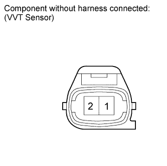
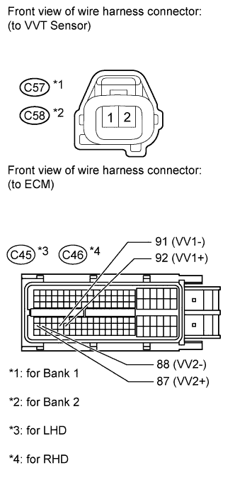
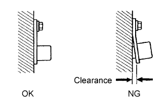

DTC P0340 Camshaft Position Sensor Circuit Malfunction |
DTC P0345 Camshaft Position Sensor "A" Circuit (Bank 2) |
| DTC Code | DTC Detection Condition | Trouble Area |
| P0340 P0345 | When either condition below is met:
|
|
 |
| Item | Content |
| Terminal | NE+ - NE- VV1+ - VV1- VV2+ - VV2- |
| Equipment Setting | 2 V/DIV. 20 msec./DIV. |
| Condition | Cranking or idling |
| 1.INSPECT VVT SENSOR (RESISTANCE) |
 |
Disconnect the VVT sensor connector.
Measure the resistance according to the value(s) in the table below.
| Tester Connection | Condition | Specified Condition |
| 1 - 2 | Cold | 835 to 1400 Ω |
| 1 - 2 | Hot | 1060 to 1645 Ω |
|
| ||||
| OK | |
| 2.CHECK HARNESS AND CONNECTOR (VVT SENSOR - ECM) |
 |
Disconnect the VVT sensor connector.
Disconnect the ECM connector.
Measure the resistance according to the value(s) in the table below.
| Tester Connection | Condition | Specified Condition |
| C57-1 - C45-92 (VV1+) | Always | Below 1 Ω |
| C57-2 - C45-91 (VV1-) | Always | Below 1 Ω |
| C58-1 - C45-87 (VV2+) | Always | Below 1 Ω |
| C58-2 - C45-88 (VV2-) | Always | Below 1 Ω |
| C57-1 or C45-92 (VV1+) - Body ground | Always | 10 kΩ or higher |
| C57-2 or C45-91 (VV1-) - Body ground | Always | 10 kΩ or higher |
| C58-1 or C45-87 (VV2+) - Body ground | Always | 10 kΩ or higher |
| C58-2 or C45-88 (VV2-) - Body ground | Always | 10 kΩ or higher |
| Tester Connection | Condition | Specified Condition |
| C57-1 - C46-92 (VV1+) | Always | Below 1 Ω |
| C57-2 - C46-91 (VV1-) | Always | Below 1 Ω |
| C58-1 - C46-87 (VV2+) | Always | Below 1 Ω |
| C58-2 - C46-88 (VV2-) | Always | Below 1 Ω |
| C57-1 or C46-92 (VV1+) - Body ground | Always | 10 kΩ or higher |
| C57-2 or C46-91 (VV1-) - Body ground | Always | 10 kΩ or higher |
| C58-1 or C46-87 (VV2+) - Body ground | Always | 10 kΩ or higher |
| C58-2 or C46-88 (VV2-) - Body ground | Always | 10 kΩ or higher |
|
| ||||
| OK | |
| 3.CHECK SENSOR INSTALLATION (VVT SENSOR) |
 |
Check the VVT sensor installation.
|
| ||||
| OK | |
| 4.CHECK INTAKE CAMSHAFT (TEETH) |
Remove the cylinder head cover (Click here).
Check the teeth of the intake camshaft.
|
| ||||
| OK | |
| 5.REPLACE VVT SENSOR |
Replace the VVT sensor (Click here).
| NEXT | |
| 6.CHECK WHETHER DTC OUTPUT RECURS |
Connect the intelligent tester to the DLC3.
Turn the engine switch on (IG).
Turn the tester on.
Clear DTCs.
Start the engine.
Enter the following menus: Powertrain / Engine and ECT / DTC.
Read DTCs.
| Result | Proceed to |
| No DTC is output | A |
| P0340 or P0345 is output | B |
|
| ||||
| A | ||
| ||